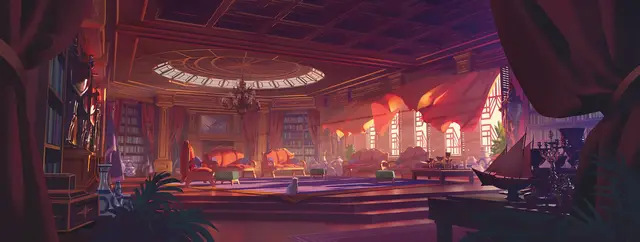

Дворянин
Noble

Характеристики Сила, Интеллект, Харизма
Черта Одарённый
Навыки История, Убеждение
Инструменты Игровой набор
Снаряжение Выберите А или Б: (А) Игровой набор (выбранный выше), Отличная одежда, Духи, 29 ЗМ; или (Б) 50 ЗМ
Вы выросли в замке, окруженные богатством, властью и привилегиями. Ваша семья, из мелких аристократов, позаботилась о том, чтобы вы получили первоклассное образование; часть его вы ценили, часть вызывала у вас негодование. Ваше пребывание в замке, особенно долгие часы наблюдений за своей семьей при дворе, также многому научили вас в вопросах лидерства.